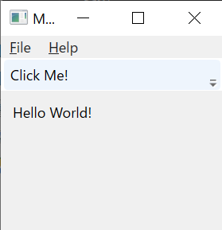
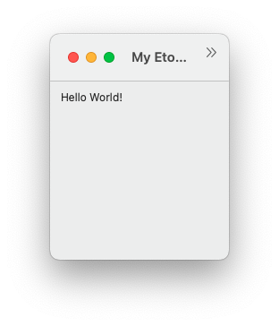
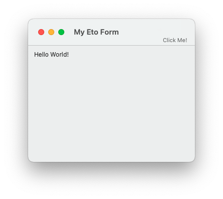
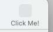

C#演習第5・6回課題ではクロスプラットフォームGUIフレームワークEto.Formsを用いるので，その環境をセットアップする．具体的には，「コマンドライン環境の設定」を行った後，VSCode上で動作確認を行う．
また，GTK用アプリケーションを作成したい人はGTKのインストールを参照する（現状Mac環境のみ記載．Windows環境は情報収集中）．
コマンドライン環境の設定
ターミナル（WindowsだとPowerShell，Macだと"Terminal"や"iTerm2"など．VSCode内のターミナルでもよい）上で以下を実行する．
以下のコマンドを実行する（設定自体はこれで終わり）．8以前の.NET SDKを使っている場合は
@の代わりに::と書く必要があるかもしれない．dotnet new install "Eto.Forms.Templates@*"Note
2.8.0〜2.8.2にはテンプレートがコンパイルできないという不具合があるので，以前にテンプレートをインストールした人は上記によりテンプレートを更新する．
（Macの場合のみ）これまでにインストール済でなければ，以下のコマンドを実行してXcode command line toolsをインストールする．
xcode-select --installいままでにXcodeをインストールしていなければ数GBほどのダウンロードが発生する．
確認のために以下を実行してみる．
dotnet new list etoNote
dotnetのバージョンによっては，dotnet new -l etoやdotnet new eto -lのように書かなければならないかもしれない．たとえば，以下のように表示されるはず．
これらのテンプレートは、入力: 'eto' と一致しました テンプレート名 短い名前 言語 タグ ------------------------- -------- ---------- ------------------ Eto Application etoapp [C#],F#,VB Cross Platform/Eto Eto Panel, Dialog or Form etofile [C#],F#,VB Cross Platform/Eto
動作確認
Eto.Formsプロジェクトを作成し，VSCodeで開く．以下は「VSCodeでフォルダを開いた後に，VSCode内のターミナルからプロジェクト/ソリューションを作成する」流れを紹介しているが，環境構築1で紹介した通り「ターミナルで予めプロジェクト/ソリューションを作成し，その後VSCodeでソリューションを開く」を行ってもよい．
適当なフォルダ（
HelloEtoとする）を作成する．ただし，プロジェクトフォルダの中を避ける．そして，VSCodeでそのフォルダを開く．Caution
プロジェクトフォルダはネストさせない．
VSCode上のターミナル（メニューバーより「表示」→「ターミナル」あるいはJapanese Language Packを入れていないなら"View"→"Terminal"）を開き，以下のコマンドを実行する．
-slnは不要だが，どうせC# Dev Kitが生成することになるので先に生成しても同じ．dotnet new etoapp -slnその後
ls -F（Windowsだとdir）してみると以下のようなフォルダおよびファイルが生成されたことがわかる（Windowsだと表示は異なるが作成されるフォルダ・ファイルは同じ）．$ ls -F HelloEto/ HelloEto.Gtk/ HelloEto.Mac/ HelloEto.Wpf/ HelloEto.sln
Eto.Forms 2.11.0の不具合のワークアラウンドを実施する．この作業はプロジェクト作成ごとに必要になる．新しいバージョンでは解消されているかもしれない．変更する場所は
HelloEto以下は以下の構造になっているので，Windowsの場合はHelloEto.Wpf.csproj，Macの場合はHelloEto.Mac.csprojである．HelloEtoHelloEto- ...
HelloEto.WpfHelloEto.Wpf.csproj（← Windowsの場合はこれを変更）- ...
HelloEto.MacHelloEto.Mac.csproj（← Macの場合はこれを変更）- ...
- ...
Windowsの場合，
HelloEto.Wpf直下のHelloEto.Wpf.csprojを開き，PropertyGroup内の以下の箇所<TargetPlatform>net10.0</TargetPlatform>を下記のものに変更する（
net10.0の部分はインストールしたSDKのバージョンに合わせる）．要は，-windowsを追加する．<TargetPlatform>net10.0-windows</TargetPlatform>また，Macの場合は，
HelloEto.Mac直下にあるHelloEto.Mac.csprojを開き，PropertyGroup内に以下の行を追加する．<StartWorkingDirectory>./</StartWorkingDirectory>ターミナルからのみ実行する場合はこの作業は不要．
ビルドおよび実行してみる．
Windowsの場合は
HelloEto.Wpf以下のProgram.cs，Macの場合はHelloEto.Mac以下のProgram.csを開き（サイドバーからファイルを選択する）， エディタ右上（アクティビティーバーにあるアイコンではない）の「再生ボタンの右下に虫がついたアイコン」（デバッグ実行を表す）をクリックする．あるいは，VSCode上のターミナルから，Windowsの場合は
dotnet run --project HelloEto.Wpfを，Macの場合は
(cd HelloEto.Mac && dotnet run)を実行することでプログラムを通常実行する（
dotnet run --project HelloEto.Macでは実行に失敗する）．はたまた，「実行とデバッグ」あるいは
F5キーで（デバッグ）実行する場合は，やはり「デバッガーの選択」や「起動構成の選択」等について聞かれる．最初の質問には「C#」と回答すればよいが，二つ目の質問にはWindowsの場合は「HelloEto.Wpf」，Macの場合は「HelloEto.Mac」と回答する．GTKのインストールを行っていれば「HelloEto.Gtk」を選んでもよい．いずれの場合もビルドは自動的に行われる．
Note
Mac環境だと
....Wpfプロジェクトはビルドできない．Win環境だと....Macはビルドできるが実行できない．Windowsの場合の挙動
しばらく待つと以下のようなウィンドウが表示される．

「Click Me!」の部分をクリックするとダイアログが表示される．
実行を停止するには，上記ウィンドウの×ボタンを押せばよい．また，VSCodeの画面上部にデバッグ実行を制御するためのUIが表示されているので，□の形の停止っぽいボタンを押してもよい．
Macの場合の挙動
しばらく待つと以下のようなウィンドウが表示される．

ツールバー上のボタン「Click Me!」は初期ウィンドウサイズだと隠れてしまっている．拡大して表示しよう．

「Click Me!」の上の部分にマウスポインタを持ってくると，色が変わる部分があるのでそこをクリックするとダイアログが表示される．
- 「Click Me!」自体はクリックできない．

デバッグ実行だと，Command + Qを押したりメニューからQuitを選択したりしてもデバッグ実行自体は終了しない． VSCodeの画面上部にデバッグ実行を制御するためのUIが表示されているので，□の形の停止っぽいボタンを押す．
dotnet run等でデバッグ実行でなく通常の実行を行った場合は，Command + Q を押すか，メニューからQuitを選択してプログラムを終了することができる．Important
ウィンドウ左上の閉じるボタンはプログラムを終了させない．この挙動はMacの一般的なアプリケーションプログラムと同様である．
GTKのインストール
オプショナル．
Windows環境については情報収集中．
Mac
Homebrewをトップページに書いてあることに従いインストールする．遅かれ早かれ
brewは入れることになると思うので，最終的な手間はそう大きくないはず．ターミナルから
brew install gtk+3を実行する．brew updateも必要かもしれない．